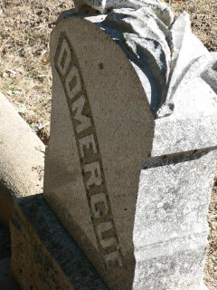

|  |
originally Mill Valley, Marin County, California December, 1891 The Sausalito News reported that the first burial in the "Sausalito New Cemetery" occurred in late December, 1891. That burial was of Catherine Domergue and the burial appearently occured before the cemetery was surveyed. The location of the Domergue family plot in plainly in the middle of "Pear Path." |
| ||||||
|
The newly created Sausalito Cemetery Association filed its Section Map of the new Sausalito Cemetery with the Marin County Recorder on September 15, 1892. "Gaston P. Domergus," the husband of the late Catherine Domergue was then able on September 27, 1892 to finalize to purchase the plot were his wife was buried, Lot 26, between Blocks 4 and 5, Section "F". He was the first person to purchase a Lot in the new cemetery. If there ever was a headstone for Catherine Domergue, it is no longer in the family plot. The plot itself is on a steep slope and a number of headstones in that area have been vandalized and shoved down the hill. Sometimes we see a base for a headstone, but no headstone, not even down the slope.  The Sausalito News, January 1, 1892 Funeral of Catherine Domergue, 3:1 Death Notice, 3:3 ========================================= =========================================
Our Sources :: |
||||||

{kind=link}
{kind=link}
{kind=link}
{kind=link}